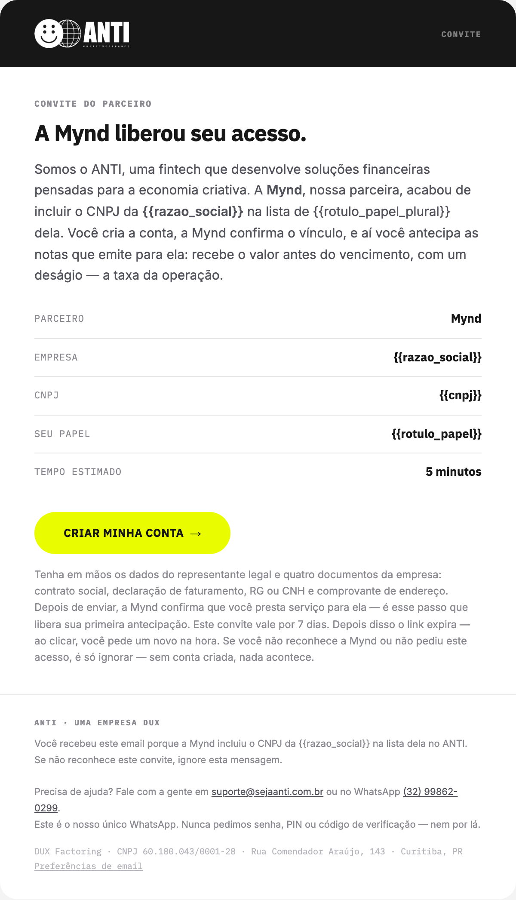
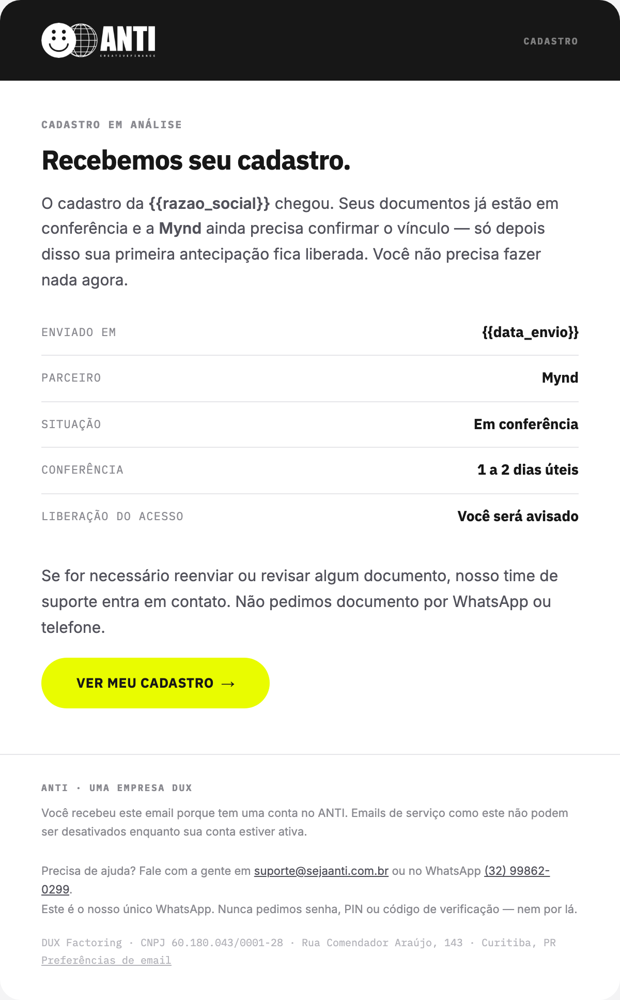
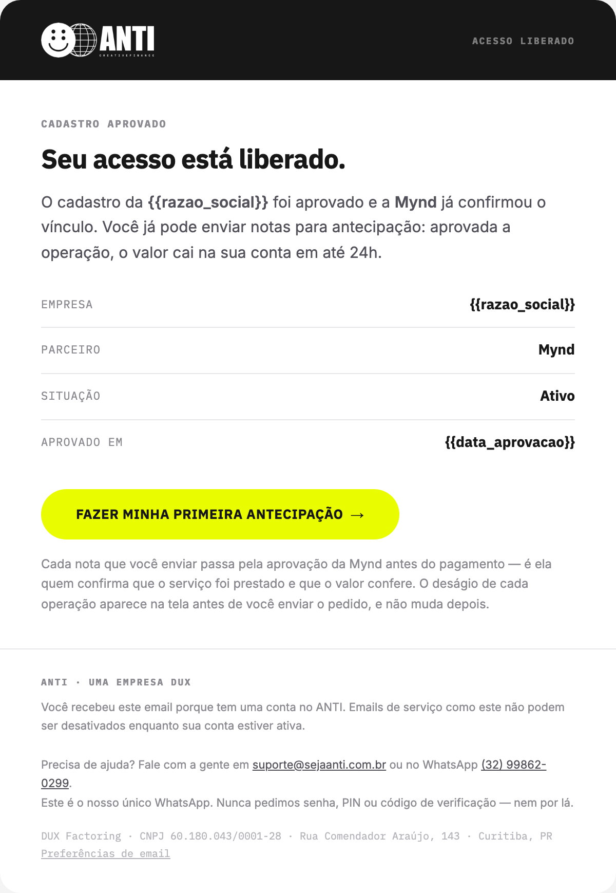
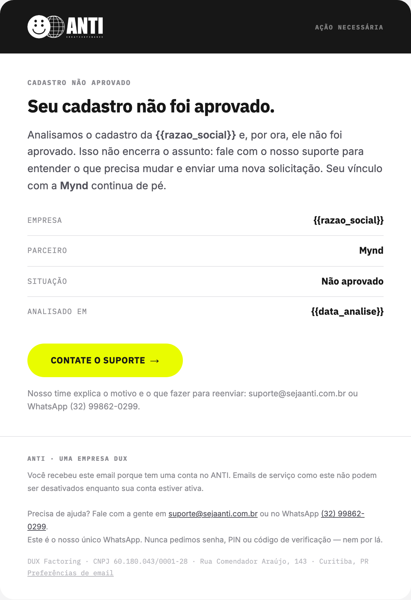
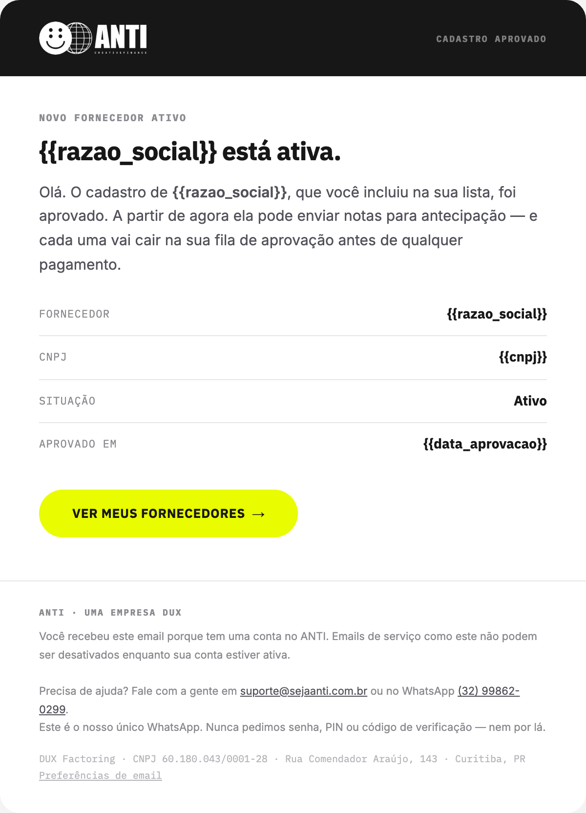
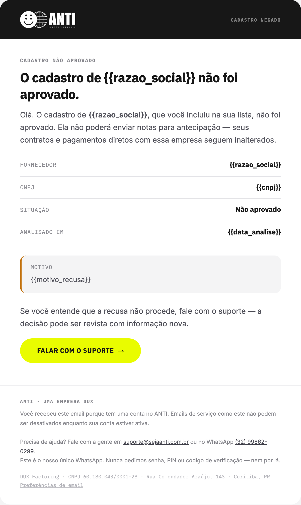

FRS1

Treze comunicações que cobrem o cadastro do fornecedor, a análise da operação e o caminho do dinheiro — só o que está aprovado no Figma e criado no SendGrid, pronto para testar disparo. Diferente da régua do app, aqui há dois destinatários: o fornecedor, que vende a nota, e o parceiro, que a paga.
Risco sacado é o modelo padrão da operação: a decisão de crédito olha principalmente para quem vai pagar a nota, não para quem a vendeu. No produto, isso se traduz em dois perfis dentro do Portal ANTI — e em duas pontas de comunicação que precisam ser escritas separadamente.
Vende o recebível e recebe o dinheiro. Passa pelo cadastro, envia a solicitação, assina o contrato e acompanha o crédito. No produto o rótulo do papel pode variar por parceiro (ex.: Influenciador, na Mynd), mas nesta régua ele é sempre chamado de fornecedor.
Analisa as operações que os fornecedores enviam e administra a carteira de fornecedores. É dele o segundo voto na dupla aprovação — ANTI e parceiro. Juridicamente ele é o sacado da nota; no texto das comunicações e nesta tabela ele é sempre chamado de parceiro, nunca de sacado.
A consequência prática para o texto: a mesma mudança de estado costuma gerar duas comunicações, uma para cada ponta, e elas não podem ser o mesmo email com o nome trocado. O fornecedor quer saber o que acontece com o dinheiro dele; o parceiro quer saber o que entrou na fila para analisar.
Agrupadas pelo fluxo a que pertencem. Cada linha traz quem recebe, o gatilho, as variáveis reais que o template espera em dynamic_template_data e o template_id do SendGrid. Clique no nome da comunicação para ver a cara dela na seção Preview, logo abaixo.
Só o que está aprovado no Figma e criado no SendGrid. Este documento é espelho do fluxo desenhado nas páginas Cadastro Fornecedor e Fluxo logado — nenhuma proposta ainda não decidida entra aqui. Template ID e variáveis foram conferidos contra a conta real do SendGrid e contra o HTML publicado. As variáveis são exatamente os {{token}} que aparecem no HTML de cada versão ativa. Uma convenção vale para as treze: o botão de ação é sempre {{link_cta}}, em todo template — nunca um nome específico como contrato_url ou portal_url.
| Comunicação | Quem recebe | Gatilho | Variáveis | Template ID · SendGrid | Status |
|---|---|---|---|---|---|
| FRSCadastro do fornecedor6 comunicações | |||||
| FRS1Convite | Fornecedor | O parceiro inclui o CNPJ do fornecedor na carteira dele — cadastro avulso ou importação por planilha — e o fornecedor ainda não tem conta no portal | {{cnpj}}{{link_cta}}{{razao_social}}{{rotulo_papel}}{{rotulo_papel_plural}} | d-df076170993449039a972802cde7bbf5 | In progress |
| FRS1Cadastro em análise | Fornecedor | O fornecedor conclui o cadastro num único formulário — CNPJ, dados do representante e os quatro documentos — e ele entra em conferência | {{data_envio}}{{link_cta}}{{razao_social}} | d-68534294d64145d1bc45ef348d7cfba0 | In progress |
| FRS2Cadastro aprovado | Fornecedor | A equipe Anti aprova os documentos e o parceiro confirma o vínculo — a conta do fornecedor passa a ATIVA | {{data_aprovacao}}{{link_cta}}{{razao_social}} | d-48eafcac67b94c5a87b51646caa9c1ff | In progress |
| FRS3Cadastro negado | Fornecedor | O cadastro do fornecedor é reprovado na conferência de documentos | {{data_analise}}{{link_cta}}{{razao_social}} | d-7a59f96e6e3f4ae4ab3bd0a4f6f5f4e0 | In progress |
| FRS2-PCadastro aprovado (parceiro) | Parceiro | Mesmo evento do FRS2, do lado do parceiro — o fornecedor que ele colocou na carteira está liberado para operar | {{cnpj}}{{data_aprovacao}}{{link_cta}}{{razao_social}} | d-e87f58eec2b04bc0baf5c91e4f8964ef | In progress |
| FRS3-PCadastro negado (parceiro) | Parceiro | Mesmo evento do FRS3, do lado do parceiro | {{cnpj}}{{data_analise}}{{link_cta}}{{motivo_recusa}}{{razao_social}} | d-afbd77eabc4d478ca385f149c59f2c12 | In progress |
| PFSOperação no portal7 comunicações | |||||
| PFS1Solicitação enviada | Fornecedor | O fornecedor anexa a nota, confere os dados extraídos e confirma o envio — etapa 3 de 3 do assistente de nova antecipação | {{link_cta}}{{order_id}}{{valor_nota}}{{vencimento}} | d-dd5d687573bd48a38339e77470225c4f | In progress |
| PFS1-PNova solicitação (parceiro) | Parceiro | Mesmo envio, do lado do parceiro — a nota cai na fila “Para analisar” do Portal do Parceiro | {{cnpj_cedente}}{{link_cta}}{{nome_cedente}}{{numero_nota}}{{valor_nota}}{{vencimento}} | d-2e9435d081214a13a6f9fa25315c4cf9 | In progress |
| PFS2Solicitação aprovada | Fornecedor | A dupla aprovação fecha: o parceiro aprova a nota (APROVAÇÃO PARCEIRO) e a Anti aprova o crédito (APROVAÇÃO ANTI) — contrato gerado | {{desagio}}{{link_cta}}{{order_id}}{{valor_liquido}}{{valor_nota}} | d-84f758f7f7dc4c5eb8681cd34905c7f0 | In progress |
| PFS3Solicitação recusada | Fornecedor | A operação é recusada — pelo parceiro ou pela Anti, na tela de detalhe da operação | {{link_cta}}{{order_id}}{{valor_nota}} | d-e9b5379872e64b55972589430d7cdca3 | In progress |
| PFS4Contrato assinado | Fornecedor | O contrato da cessão é assinado digitalmente por todas as partes | {{conta_destino}}{{link_cta}}{{order_id}}{{previsao_credito}}{{valor_liquido}} | d-5b598cf937164a07b8bcaaf0453ef957 | In progress |
| PFS5Valor creditado | Fornecedor | O depósito do valor líquido é efetivado na conta do fornecedor — liquidação da operação | {{conta_destino}}{{data_credito}}{{desagio}}{{link_cta}}{{order_id}}{{valor_liquido}}{{valor_nota}} | d-72de6fe3e58145db9d90ae63f21815da | In progress |
| PFS6Falha no depósito | Fornecedor | O depósito não se conclui — dados bancários divergentes, conta encerrada ou saldo insuficiente do lado da Anti | {{id_tentativa}}{{link_cta}}{{motivo_falha}}{{order_id}}{{valor_liquido}} | d-0bab21d89b5a4a4e898318e371b39490 | In progress |
A cara real de cada uma das treze comunicações, na mesma ordem e com os mesmos códigos da tabela acima — são capturas do HTML publicado, não um mockup à parte. Clique numa imagem para abrir em tamanho real, ou em “Ver no Figma” para abrir o card correspondente no arquivo Risco Sacado.
O Figma é a referência para contexto, não só para o visual: cada card fica ao lado do print da tela do Portal ANTI que dispara aquela comunicação, ligado por uma seta. É lá que dá para ver de onde o evento vem e para onde o botão do email leva de volta — a página Cadastro Fornecedor tem o FRS1/FRS2/FRS3, e a Fluxo logado tem o PFS1–PFS6.






O que muda em relação à régua do app, onde o destinatário é um usuário autenticado.
Os treze template_id já existem no SendGrid e estão na tabela acima, conferidos contra a conta. Eles pertencem ao ambiente, não ao código: sandbox e produção têm ids diferentes, e um id fixo no fonte é o erro que só aparece no dia do go-live.
A dupla aprovação faz cada mudança de estado render duas comunicações — o par FRS2/FRS2-P e o par PFS1/PFS1-P. São dois template_id e duas chamadas, não um email com dois destinatários em cópia: o que o fornecedor precisa ler não é o que o parceiro precisa ler.
FRS1 · Convite sai depois da inclusão do CNPJ na carteira do parceiro, para um endereço que nunca se autenticou. O link_cta desse template carrega um link de convite válido por 7 dias — a cópia já avisa o fornecedor disso, o valor exato não é uma variável.
O endereço do fornecedor vem da planilha ou do cadastro avulso que o parceiro fez, então erro de digitação é caso comum. O Event Webhook precisa devolver o bounce de FRS1 para a tela de Fornecedores, e não falhar em silêncio — senão o fornecedor fica em AGUARDANDO para sempre.
Retry de fila não pode virar segundo email. A chave combina o id da operação (ou do cadastro) com o código da comunicação — PFS5:op_12345.
FRS3 e PFS3 (fornecedor) não carregam motivo_recusa — o email manda o fornecedor falar com o suporte. Já FRS3-P (parceiro) carrega o motivo, porque foi ele quem recusou. Enviar o motivo também ao fornecedor é mudança de produto, não só de template — decidir antes de alterar.
Ao descrever o fornecedor numa mensagem para o parceiro, PFS1-P usa nome_cedente/cnpj_cedente, enquanto FRS2-P/FRS3-P usam razao_social/cnpj sem prefixo. Não foi decisão deliberada — as duas rodadas de geração divergiram. Antes de versionar 1.0, escolher um padrão só e republicar os três templates.
RS1 e RS2 existem no SendGrid — vieram de uma proposta de melhoria ao cadastro (página Melhoria, no Figma), que reorganiza o formulário em dois passos. A proposta não foi aprovada nem decidida, então ficou fora deste documento. Não usar esses dois nos testes de disparo: eles não correspondem a nenhuma tela do fluxo atual do portal.
Valor da nota, deságio e valor líquido aparecem no email e na tela de detalhe da operação. Eles têm que sair do mesmo cálculo: divergência entre o que o email diz e o que o portal mostra vira chamado no suporte e desconfiança na conta.